2008年
class archive ｜non-profit, silent archive
Yahoo!見て、びっくりしたんですが...これは一体どういう意味？日浦さんが脱退？
全然...全然...急すぎて意味が全く分からない！！ええ...どういうこと............
錯乱している…気持ち悪すぎる…ゴルフ？吐き気がする……誰か私に分かりやすく説明…してくれ...
Yahoo!ニュースで突然飛び込んできた日浦さん脱退の話題に、驚きと混乱が広がっています。 「急すぎて意味が分からない」「錯乱して気持ち悪い」「誰か分かりやすく説明して…」 ファンの戸惑いと動揺の声をそのまま記録します。
ｃｌａｓｓに異色新人…松坂ら友情出演？９０年代にヒットした「夏の日の１９９３」で知られる男性デュオ「ｃｌａｓｓ」の新メンバーとして、異色の新人が加入する。プロゴルファー・横尾要選手のコーチで、大リーグ・松坂大輔投手をはじめ虎戦士とも親交の厚い異色の経歴の持ち主、岡崎公聡（４８）だ。
横尾らのゴルフの師匠であり、ジャンボ尾崎と使用クラブ契約を結ぶゴルフメーカー「ＧＭＡ」の代表取締役にして、サンテレビ「ＧＯＬＦ武勇伝」のメーンパーソナリティー。そんな“ゴルフ界の大物”が遅咲きの歌手デビューを果たす。
松坂投手や阪神タイガース・中西清起コーチ、広沢克実コーチ、元虎戦士の掛布雅之氏、真弓明信氏らとは“ゴルフ友達”。歌手デビューを松坂投手にメールで伝えたところ、「『え～っ！？』とひと言だけ返ってきました」という。
早くも新曲「冬の日の２００９」（１２月３日発売）のリリースが決まっており、「プロモーションビデオに、いろんな人に声を掛けてみようかな」と幅広い交友関係からサプライズ出演の可能性も！？
ｃｌａｓｓは、津久井克行（４８）と日浦孝則（４８）の男性デュオとして、１９９３年に「夏の日の１９９３」でデビュー。ミリオンヒットとなった。解散、再結成を経て、０７年に同曲がアルバム「Ｒ３５ Ｓｗｅｅｔ Ｊ-Ｂａｌｌａｄｓ」に収録され再び脚光を浴びた。
だが今年４月、家庭の事情で日浦が脱退。所属事務所が新メンバー発掘に奔走し、白羽の矢を立てたのが岡崎だった。音楽活動は「カラオケをする程度」だったという岡崎だが、津久井は、「芸能界ではないところで生きている人のエネルギーはいいなと思いました。素晴らしく魅力的な声ですよ」と期待している。新生ｃｌａｓｓは今月２０日に東京国際フォーラムで行われる「ザ・エターナル・ソングス・コンサート」がお披露目となる。 ｃｌａｓｓに“新入生” ゴルフのティーチングプロが加入
大ヒット曲「夏の日の１９９３」で知られる「ｃｌａｓｓ」に、ジャンボ尾崎選手と契約するゴルフクラブメーカー「ＧＭＡ」代表で、ティーチングプロの岡崎公聡（４８）が新加入したことが１５日、分かった。今春にメンバー１人が脱退、津久井克行（４８）が単独で活動していたため、ツインボーカルデュオに復活する。
新生「ｃｌａｓｓ」は２０日、「ザ・エターナル・ソングス・コンサート」（東京国際フォーラム）でお披露目され、１２月３日に新曲「冬の日の２００９」をシングルリリースする。津久井が７月に岡崎と出会い「荒っぽいが男気がある。魅力的な声」と意気投合した。２人はこの日、大阪市内で行われた森三中の村上知子主演のＴＢＳ系昼ドラ「パンダが町にやってくる」の収録に、本人役で出演した。１１月１２日放送予定分。 ｃｌａｓｓが新メンバーで再デビュー
ヒット曲「夏の日の１９９３」などで知られる男性デュオのｃｌａｓｓが、津久井克行（４８）と新メンバーの岡崎公聡（こうそう）とのユニットで再デビューすることが１５日、分かった。この日、２人が大阪市内で行われたＴＢＳ系昼ドラ「パンダが町にやってくる」（１１月３日スタート、月～金曜午後１時３０分）の収録に参加し、初仕事を行った。岡崎は、尾崎将司と用品契約を結ぶゴルフクラブメーカー「ＧＭＡ」の代表。 昼ドラに渡辺美里らが本人役で出演
毎日テレビ系昼帯ドラマ「パンダが町にやってくる」（１１月３日スタート、月～金曜後１・３０）に歌手の渡辺美里（４２）、岡本真夜（３４）、中村あゆみ（４２）らが週替わりで出演することになり１５日、主演の森三中・村上知子（２８）とともに大阪市内のスタジオで収録を行った。
村上はラジオＤＪ役で、渡辺らはラジオ番組のゲストとして本人役で出演する。
第１週登場の渡辺は、映画で演技経験はあるものの、ドラマは初めて。セリフはアドリブで任され、「ライブとは違う汗をかきました。『なめたらいかんぜよ！』とか、ちゃんとしたセリフもしゃべってみたかった」と振り返った。また、「森三中大好きなんです。３人ともキュートだし。森四中になりたい」とラブコール。村上も「７年くらい前、深夜ラジオにゲストで出たときお会いしました。それを覚えていていただいて」と感激していた。
また、ゴルフクラブメーカー代表の岡崎公聡氏を新メンバーに加え、今秋から新生ｃｌａｓｓとして活動する津久井克行（４９）も参加した。
「class book 1993 to 1996」は津久井氏と岡崎氏のユニットのclassは追いません。
日浦孝則と津久井克行の「class」活動のみを自己満足で追っていくサイトです
classがデビューして15年…今まで色んなランキングで1位に手が届きそうで届かなかった。
そのclassがついについに！首位獲得ーーー!!!ヽ(｀∀´)ﾉしかもとてもいいテーマでのランキングじゃないですか！
「夏の歌」といえば、どの曲を歌いますか？」って！15年経っても色褪せずに人々の記憶に残る歌を歌った。
特に時代を限定したアンケートなわけじゃないのに1位ってすごいすごい！！
夏休みも中盤に入り、まさしく夏真っ盛り。夏フェスの盛り上がりも最高潮を向かえ、最高の夏を迎えている方も多いことでしょう。さて、そんな夏本番を迎え、夏ソングと言えば何？と、カラオケランキングを調査。タイトルに「夏」「サマー」「summer」が含まれる楽曲のカラオケリクエストランキング調査を実施したところ、堂々1位を獲得したのはclassの「夏の日の1993」でした。2位はWhiteberryの「夏祭り」、3位はJAYWALK（J-WALK）の「何も言えなくて…夏」。4位がゆずの「夏色」、5位がサザンオールスターズの「真夏の果実」と、Whiteberryのカバー曲が比較的最近とはいえ、TOP5は他全て10年以上前の作品。いわゆる夏の歌としては定番のスタンダード作品が人気のようだ。
とはいえ、健闘しているのが6位にランクインしたNEWSの「SUMMER TIME」。2008年にリリースされたばかりの作品だが、すでに強い支持を受けているのは、さすがNEWSといったところ。
そのほかTOP20は新旧綺麗に取り混ぜられたランキングになったようで、お気に入りの曲がひとつくらいはこの中に見当たりそう。先日お伝えした「花火」ランキングでは、タイトルにワードがないために対象外となったものの多くの人から支持されたJITTERIN' JINNの「夏祭り」は、ここではしっかり8位にランクイン。再燃しているJITTERIN' JINN人気、2008年のトピックスとなりそうです。
ところで「花火」ランキングではJ-POPとともに演歌もランクインしていたのが印象的だったものの、「夏の歌」では、一気にJ-POP一色に染まってしまったのは、どういうことでしょう。ドピーカンをイメージする「夏」「サマー」「summer」という単語は、演歌の世界にはいまひとつ？ 「夏の歌」関連のカラオケ人気楽曲ランキング表TOP20
1 夏の日の1993 class
2 夏祭り Whiteberry
3 何も言えなくて…夏 JAYWALK（J-WALK）
4 夏色 ゆず
5 真夏の果実 サザンオールスターズ
6 SUMMER TIME NEWS
7 夏の思い出 ケツメイシ
8 夏祭り JITTERIN' JINN
9 SUMMER TIME LOVE EXILE
10 真夏の夜の夢 松任谷由実
11 真夏のオリオン INFINITY16 welcomez MINMI,10-FEET
12 あー夏休み TUBE
13 夏の終りのハーモニー 井上陽水･安全地帯
14 世界でいちばん熱い夏 PRINCESS PRINCESS
15 Last Summer 加藤ミリヤ
16 夏が来る 大黒摩季
17 ハッピーサマーウェディング モーニング娘。
18 真夏の出来事 平山三紀
19 サマータイム!! MINMI
20 夏をあきらめて 研ナオコ
※調査期間 平成20年6月
※上記のランキングは、通信カラオケDAMシリーズ全機種の歌唱度数によるものです。
ちなみに… 1位のclass「夏の日の1993」は、rockwellによって2006年ヴァージョンが発表されている。
●rockwellによるカヴァー「夏の日の2006 -based on 1993-」
●classとrockwellのコラボによる「夏の日の2006-featuring class-」
準備中m(__)m
ちょっと更新が追いついてなくて申し訳ない。classデビュー15周年なのか続々とテレビ出演情報が入ってきますな。
今度は日曜の深夜、赤坂泰彦さん司会でお馴染みの「MUSIC LOVERS」に出演決定しましたヽ(｀∀´)ﾉ
「R35」特集ということで他にJAYWALKさん、山根康弘さんと再び共演となっています。O.A.は5月11日(日)です。お見逃しなく！
class怒涛のテレビ出演ラッシュ週間の第二弾！4月9日(水)NHK「SONGS」出演まとめです。
もうね、津久井さんの衣装が高島○の紙袋のような綺麗なバラだったのに呆然でした(笑)
語りに「R35」のCM出演されている桜井幸子さんが出演されたのは、素敵な演出でした。
照明がまぶしすぎてお2人の顔が分かり難いのが辛かったですね
 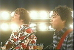
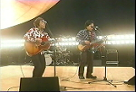
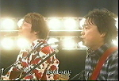
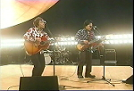

class怒涛のテレビ出演ラッシュ週間の第一弾！4月7日(月)テレビ東京「カラオケ★バトル4」の出演まとめです。
class出演までの時間が非常に長い番組でした(´･ω･`) 待ち時間大変だっただろうな…
そんなわけで対戦相手はお笑い芸人「ペナルティ」と「夏の日の1993」でガチンコ勝負！さてさて結果は？！

 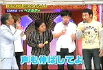
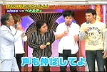


 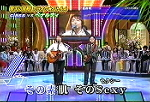
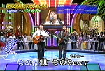
 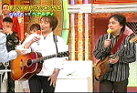
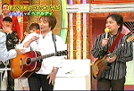
何度も何度も本屋に通い、チェックしてようやく掲載されているのを確認しました。
東京ミッドタウンで撮影したと津久井さんのブログに掲載されてましたが、この写真じゃどこか全然わかりませんね(笑)
2/29開催の「ライブR35」が大盛況だった模様で翌日、各メディアが一斉に報じました。
「めざましどようび」にもclassのVTRが流れた模様ですけど、すんません！管理人寝てました(´･ω･`)
90年代のヒット曲を集め「もう一度、妻を口説こう。」をキャッチコピーに通算95万枚を突破したヒットアルバム「R35 Sweet J－Ballads」を記念したコンサート「ライブR35」が29日、東京・有楽町の国際フォーラムで5000人を集めて開かれた。 アルバムに曲が収められた山根康広(41)、槙原敬之(38)、中西圭三（43）JAYWALK、class、そしてスペシャルゲストの酒井法子（37）が出演。CMに出演している女優桜井幸子（34）のナレーションでスタート。「夏の日の1993」「GET ALONG TOGETHER」「Woman」「何も言えなくて・・・夏」「どんなときも」など全19曲を会場のファンとともに熱唱した。 ミリオンアーティストが集結『R35』ライブ
90年代前半にヒットしたバラード曲を集めたコンピレーションアルバム『R35 Sweet J-Ballads』のヒットを記念して2月29日（金）、東京・有楽町の東京国際フォーラムで、同作に参加したアーティストらによる競演ライブ『LIVE！R35』が行われた。 同作に名を連ねた槇原敬之、J-WALK、中西圭三、山根康広、classらミリオンセラーアーティストが顔を揃え、収録曲を中心としたオムニバスライブを展開。サプライズゲストとして紅一点・酒井法子が登場すると会場は大歓声に包まれ｢世界中の誰よりきっと｣｢蒼いうさぎ｣、中西圭三とデュエットで｢愛が生まれた日｣を熱唱し「このライブに参加できて、のりピー、マンモスうれピー」と懐かしの“のりピー語”まで飛び出すリップサービスも。 ステージは“もう一度、妻と歌おう。”がコンセプトということもあり会場内には託児所が設けられ、スクリーンには歌詞が映し出される演出で、観客も思い出の曲を一緒に口ずさんだ。アンコールでは槇原敬之の｢どんなときも。｣を出演者全員が歌い、5000人の観客が一夜の夢に酔いしれていた。なお今月12日（水）には東京国際フォーラムで追加公演が行われる。 90年代名曲に5000人酔った…「ライブR35」
90年代前半のヒットソングを集め、95万枚を突破したアルバム「R35 Sweet J-Ballads」の収録アーティストが大集合する「ライブR35」が29日、東京・丸の内の東京国際フォーラムで行われた。 ファンも一緒に歌えるようにスクリーンに歌詞が表示される演出の中、Classや山根康広(41)、中西圭三(43)、JAYWALKのパフォーマンスのほか、ゲストの酒井法子(37)は「世界中の誰よりきっと」を披露。大トリを務めた槇原敬之(38)は、アンコールで「みんなで一緒に歌いましょう！」と出演陣も一緒に「どんなときも。」を大合唱。 5000人の観客が19曲の名曲に酔いしれていた。 Ｒ３５：ヒット記念ライブでＪＡＹＷＡＬＫが新曲 再婚・中西は「愛が生まれた日」熱唱
売り上げ９０万枚を突破した人気コンピレーションアルバム「Ｒ３５」のライブが２９日、「東京国際フォーラム」（東京都千代田区）であり、ステージには、中西圭三さん、山根康弘さんら同コンピに曲が収録されたアーティストが出演した。 ＪＡＹＷＡＬＫは、９１年に発売し１２８万枚を売り上げたシングル「何も言えなくて…夏」を熱唱し、さらに「あれから１７年、長い年月を経て『何も言えなくて～』の二人が出会う大人の恋を描いた」というアンサーソング「もう一度…」を初披露した。 ライブには特別ゲストとして女優の酒井法子さんも姿を見せ、中西さんと「愛が生まれた日」（藤谷美和子・大内義昭）をデュエット。酒井さんに「最近愛が生まれちゃったんですよね」と冷やかされると、昨年末に作詞家の田角有里さんと再婚した中西さんは「家庭が何より。家族を大切にして二度と心配することがないよう心がけたい」と自虐ネタで笑わせた。 「夏の日の１９９３」を熱唱したＣｌａｓｓの津久井克行さんは「今夜は奥さんに『君の笑顔は僕だけのものだよ』と口説いてみたら」と会場を沸かせ、最後に登場した槇原敬之さんはアンコールで「どんなときも。」を他の出演者や聴衆と合唱した。 この日のライブチケット５０００枚も、発売と同時に売り切れたプラチナチケット。 夫婦が水入らずで楽しめるようにと会場には託児所も設けられ、元恋人同士のカップルが寄り添う姿が見られた。 再演の要望に応え３月１２日に同地で追加公演が予定されている。０７年４月に発売された「Ｒ３５」は、 チャゲ＆飛鳥「ＳＡＹ ＹＥＳ」、米米ＣＬＵＢ「君がいるだけで」など１６曲を収録。 うち１１作は１００万枚を突破した人気楽曲で１６曲の総売上数は２０９８万枚を数える。 ＣＭの「もう一度、妻を口説こう。」のキャッチコピーも話題を集めた。
細かい詳細は分からない情報で申し訳ないのですが…
- 光文社「FLASH(フラッシュ）」にclassが掲載されます（4/1号/No.999）
- テレビ東京「カラオケ★バトル4」に出演！4月7日(月)19:00～21:48O.A.予定
- NHK「SONGS」出演決定！（「R35」関連）
- 2/29開催の「ライブR35」スカイパーフェクトテレビにて放送決定！
SKY PerfecTV！ Special ProgramライブR35 ～もう一度、妻と歌おう。～
放映日：3/20（木・祝）19:00～20:30 他
【ご視聴いただける方】e2 byスカパー！ご契約者
※チャンネル、パック・セットいずれかのご契約をされていればご覧いただけます。
大ヒットアルバム「R35」に収録されている豪華アーティストたちが集結する夢のスペシャルライブを独占放送！
お見逃しなく！
出演予定アーティスト：槇原敬之、JAYWALK、山根康広、class、中西圭三、スペシャルゲスト：酒井法子
2008年2月7日(木)O,A.フジテレビ系「とくダネ！｣のコーナー｢朝のヒットスタジオ｣にclassが出演しました(･∀･)ﾉ
祝★管理人：議長さん華麗に全国ネットデビュー!!!!(違）
2008年2月7日(木)O.A.フジテレビ系「とくダネ！｣のコーナー｢朝のヒットスタジオ｣にclassが出演しました(･∀･)ﾉ
 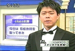
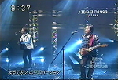
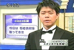
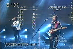
 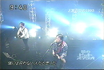
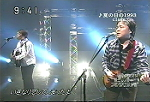
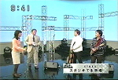
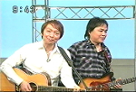
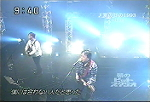
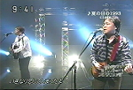
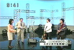
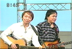
2月29日開催の「ライブR35」の告知？に伴いclassが朝の看板番組フジテレビ系「とくダネ！」に出演しますよ～( ･∀･)ﾉ
出演日は2月7日(木）放送「とくダネ！」の「朝のヒットスタジオ」です。小倉さんとの絡みはあるのか？そして歌はうたうのか？見たいけど仕事がぁ！
2月29日開催の「ライブR35～もう一度、妻と歌おう。」ですが、チケット発売日の1月5日に即日完売しました！
管理人含むチケット争奪戦に敗北した皆様、お疲れ様でした…(´･ω･`)
…で・す・が！まだ希望はあります！！
なーんと！3月12日、同会場にての追加公演が決定しております!!!!
- 8/1/12(土)12:00～8/1/20(日)18:00 プレオーダー受付
- 8/2/16(土)10:00～8/3/7(金)18:00 一般発売
チケット入手できなかった皆様、プレオーダーへ急げ!!≡≡ﾍ( ´∀`)ﾉ